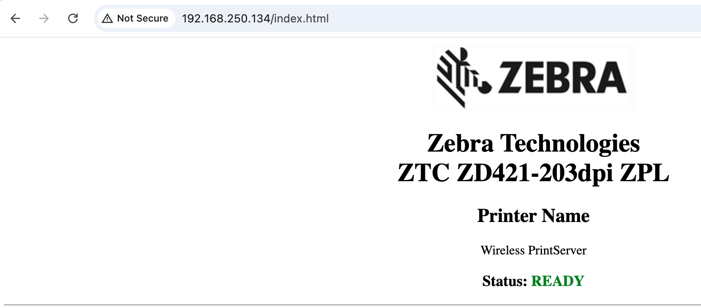

Unauthorized Device Detected
Hi,
We are having trouble using BrowserPrint to send a printing job to our Zebra ZD421 via the network. When connecting with USB it works, but we need it to work over the network as well. Can you help us fix this issue?
The printer is online and can be accessed via the network.

[Image unavailable locally: https://developer.zebra.com/sites/default/files/inline-images/image_49.png]
We have manually added the IP address and port in BrowserPrint and the host is accepted. When changing the default device, the printer is not automatically discovered which is why we manually added it.
[Image unavailable locally: https://developer.zebra.com/sites/default/files/inline-images/image_48.png][Image unavailable locally: https://developer.zebra.com/sites/default/files/inline-images/image_44.png][Image unavailable locally: https://developer.zebra.com/sites/default/files/inline-images/image_46.png]
From the logs:
556076 NanoHttpd Request Processor (#3) ERROR c.z.d.w.c.d.k - Unauthorized device detected
java.io.IOException: Unauthorized device detected
at com.zebra.ds.webdriver.core.driver.c.e(Unknown Source)
at com.zebra.ds.webdriver.core.driver.c.a(Unknown Source)
at com.zebra.ds.webdriver.core.driver.f.a(Unknown Source)
at com.zebra.ds.webdriver.core.driver.p.a(Unknown Source)
at com.zebra.ds.webdriver.core.driver.k.a(Unknown Source)
at org.b.a.a.e.a(Unknown Source)
at org.b.a.a.d.b(Unknown Source)
at org.b.a.a.b.a(Unknown Source)
at org.b.a.a.a.run(Unknown Source)
at java.lang.Thread.run(Thread.java:750)
556077 NanoHttpd Request Processor (#3) ERROR c.z.d.w.c.d.r.ResponseFactory - Creating error response for Error: Failed to write to device: Unauthorized device detected
I hope someone is able to help :)
Best,
Stephan
1 Reply
We are now using this library to interact with BrowserPrint and it works.
https://github.com/brianzinn/browserprint-es